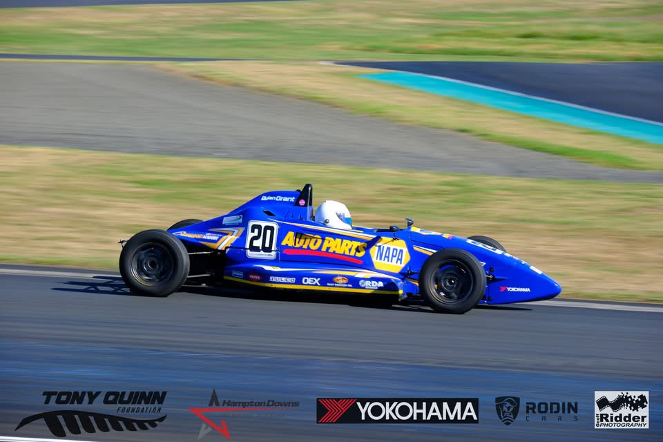
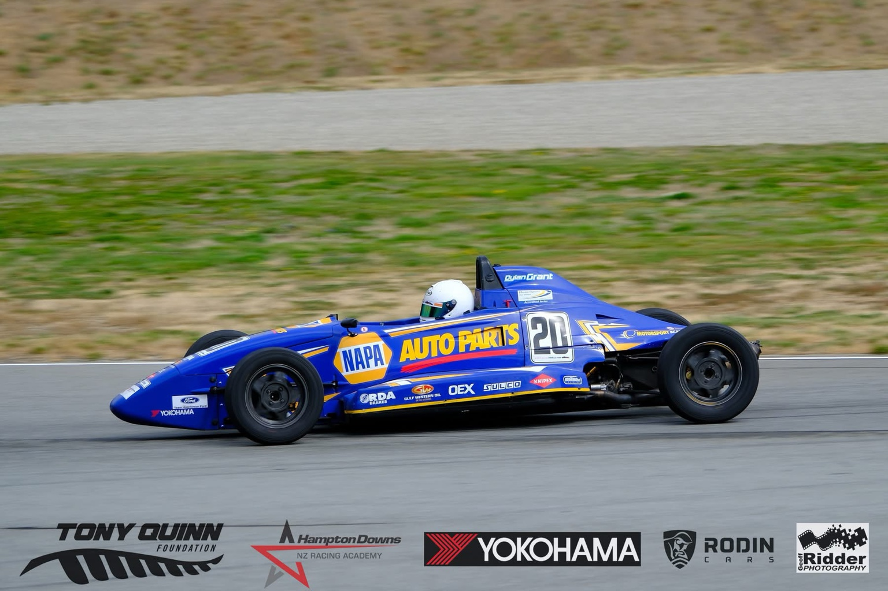
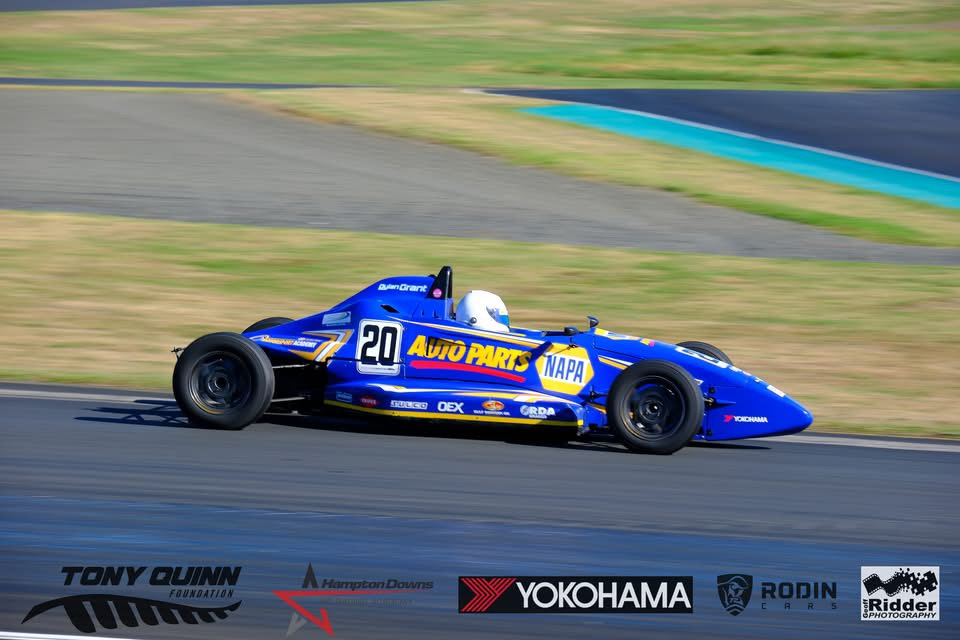
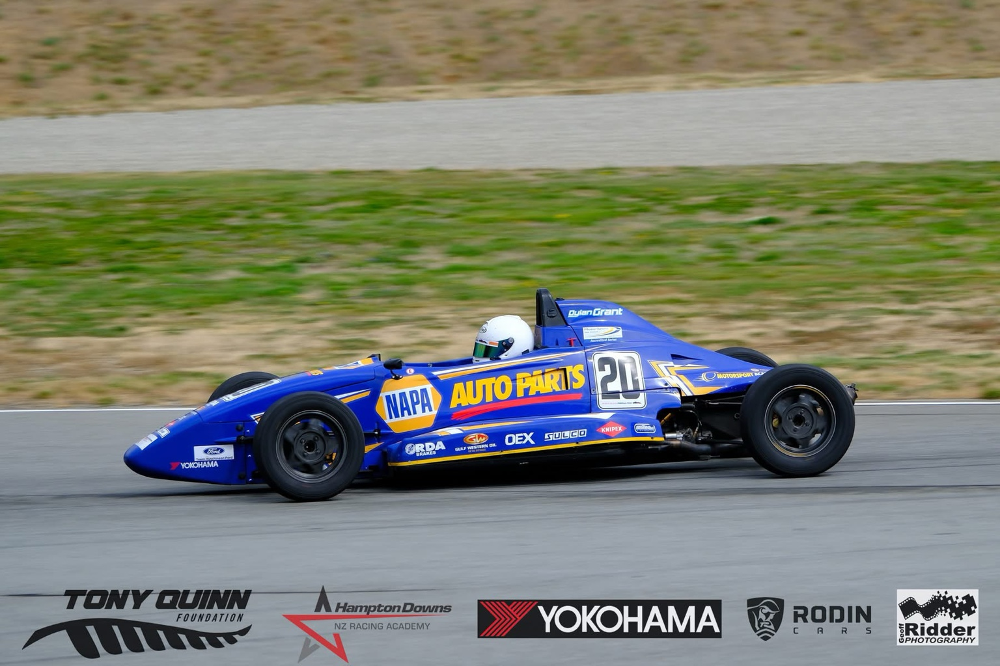

#20 — NAPA
Chasing the kiwi motorsport dream!
Dylan Grant — born 20 Jan 2005, Auckland. Karting from age 6; SpeedSport scholarship winner; Giltrap Group North Island Formula Ford Series champion.
Quick stats
~204
Races entered
37
Wins
82
Podiums
18%
Win %
About Dylan
From Auckland, Dylan began karting at Mt Wellington Kart Club aged six and progressed through Formula First into Formula Ford with support from the SpeedSport scholarship. He claimed the 2022/23 Giltrap Group North Island Formula Ford Series title and multiple race wins across the 2023–2025 seasons.
Recent highlight: Perfect opening round at Hampton Downs (2025/26 NIFF) — fastest in wet qualifying and triple race winner on used tyres.
News & Updates
Keep an eye on the Instagram for live updates from race weekends.
Partner with Dylan
Looking to reach NZ motorsport fans? Partner with Dylan Grant Racing — strong results in Formula Ford, on-track exposure, social reach, and a professional approach to sponsor activation. Packages are available for title, race-by-race, and product partnerships.
Gallery
 


